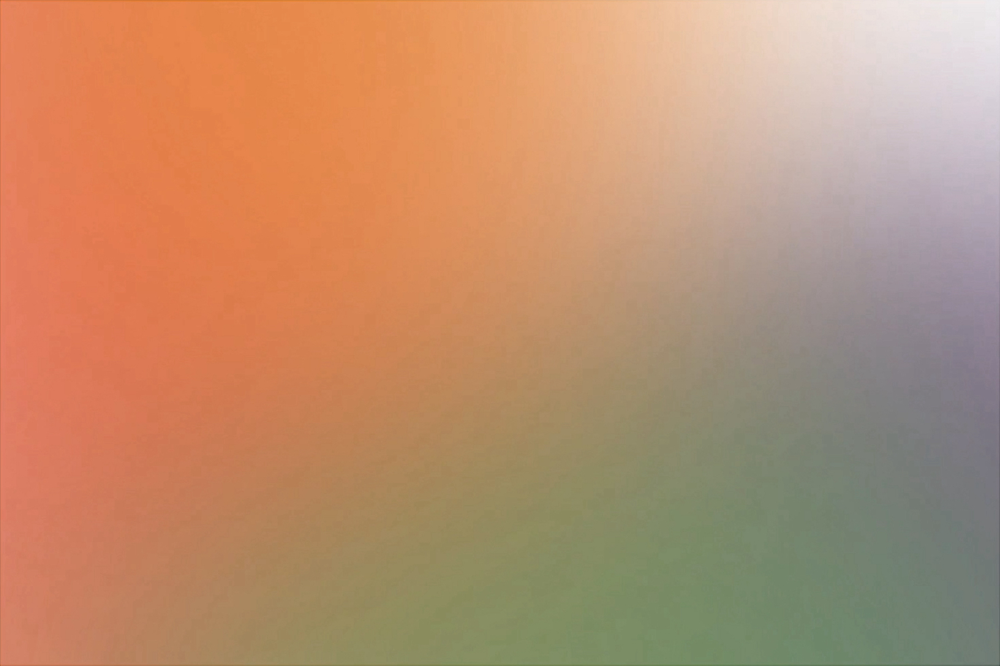
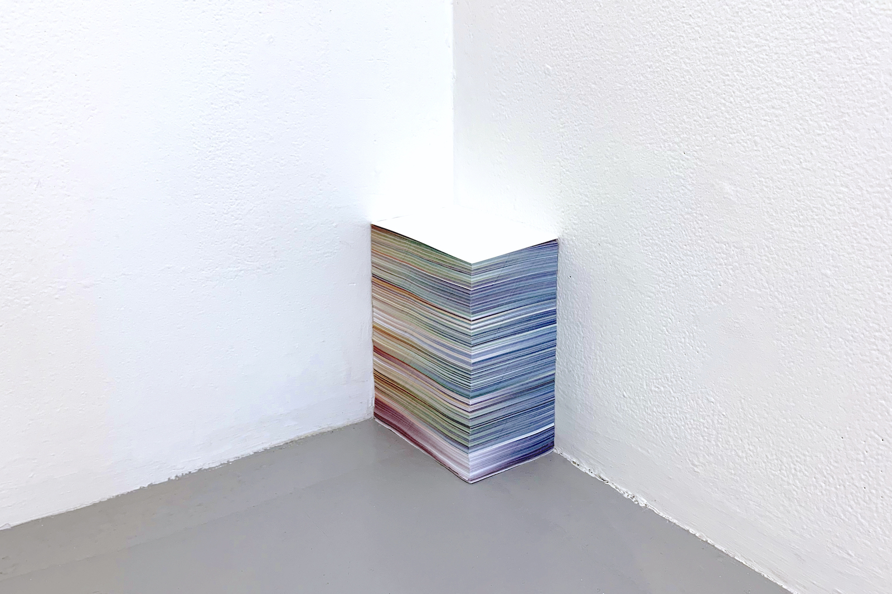

The song “Merry Christmas Mr. Lawrence” is also called “Forbidden
Colors”—colors that do not appear in ordinary visual functioning, such
as “reddish green”.
I found myself intrigued by the very idea of visualizing the
song “Forbidden Colors” using only colors, somewhat like an oxymoron. I
assigned different colors to different notes, and translated the music
score into a video of color combinations. By exporting the video as
image sequences, I printed out a book, the edges of which demonstrate
how time moves through the forbidden colors.